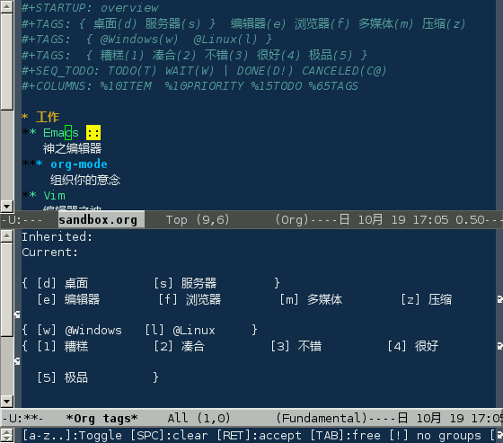
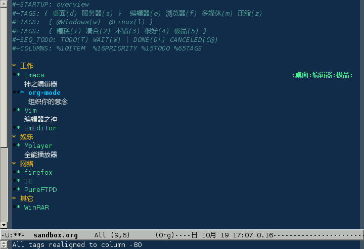
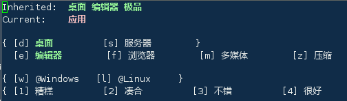

对于信息的管理，有分类和标签两种方式。
分类的方式，每一个项只能属于一个分类，但是分类的方法往往不只一种，比如一个软件，从类型上分，可以有编辑器、浏览器等，从评价上分，可以是好、坏；如果使用类型来分类，就不能使用评价来分类；而标签的方式可以很好的解决这个问题
将光标定位在当前项（Emacs）上，按下 C-c C-c

使用快捷键 s 选中“服务器”，然后再按 d 选中桌面，可以看到，两个不能同时选，因为它们是一组标签，只能选一个。再分别按下 e 和 5,回车确认：

接下来在 *** org-mode 上 C-c C-c

可以看到，它自动继承了“桌面”、“编辑器”、“极品”三个标签，而它自己拥有“应用”这个标签
在当前文件头部进行定义：
#+TAGS: { 桌面(d) 服务器(s) } 编辑器(e) 浏览器(f) 多媒体(m) 压缩(z)
每项之间必须用空格分隔，可以在括弧里定义一个快捷键；花括号里的为标签组，只能选择一个
对标签定义进行修改后，要在文件头部按下 C-c C-c 刷新[83]
也可以在 Emacs 配置文件 .emacs 中进行定义
(setq org-tag-alist '(("编辑器" . ?e) ("浏览器" . ?f) ("多媒体" . ?m)))
在配置文件中设置的是全局标签，只要是 org-mode，无论是否在头部进行设置，都可以使用这些标签。不推荐这种方式
设置标签的主要目的还是为了查询。org-mode 会为搜索结果建立一个视图
| C-c \ | 搜索标签 |
| C-c / T | |
| C-u C-c \ | 搜索带 TODO 的标签 |
可以使用逻辑表达式限制条件，更准确灵活的搜索
| + | 和 | a+b | 同时有这两个标签 |
| - | 排除 | a-b | 有 a 但没有 b |
| | | 或 | a|b | 有 a 或者有 b |
| & | 和 | a&b | 同时有 a 和 b，可以用“+”替代 |
在查询视图中 C-c C-c 退出